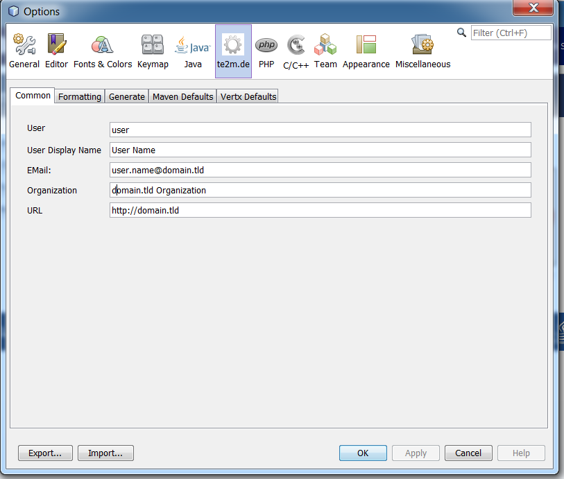

Configuration
The generation of code artefacts for Vertx.io can be configured in various ways.
Options
This module provides an own option panel with various settings.

Common Options
The Common options panel provides some global settings used in different templates.
Formatting Options
The Formatting options panel provides some settings like the used date format used in the generated code.
Maven Defaults
The Maven Defaults options panel provides some settings like default group id, artifact id or version. All settings can be overwritten in the "New Project Wizard".
Vertx Defaults
The Vertx Defaults options panel provides some settings like vertx.io target version and several deployment options (Fat-Jar, Docker). All settings can be overwritten in the "New Project Wizard".
Template Customizing
All used templates can be customized by using NetBeans built in features.